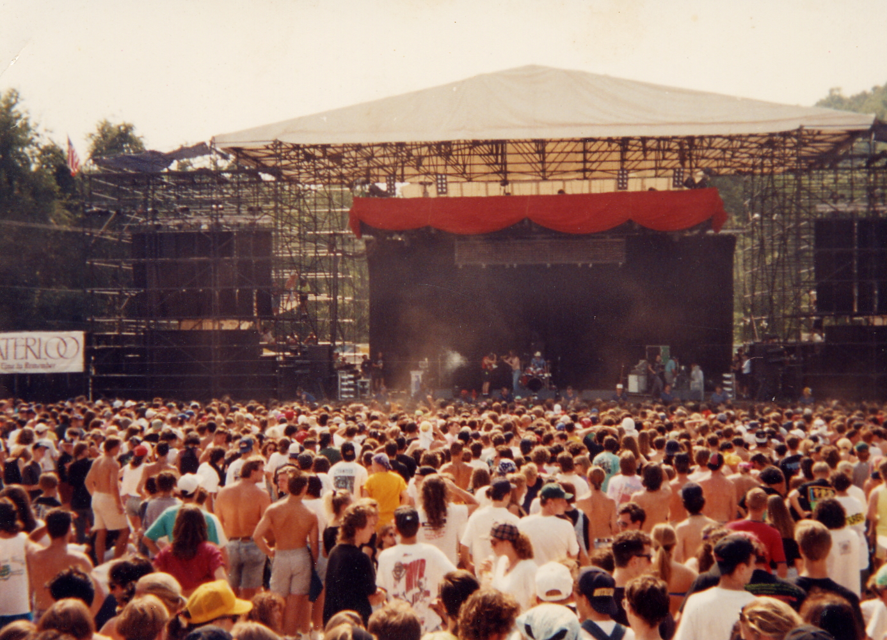
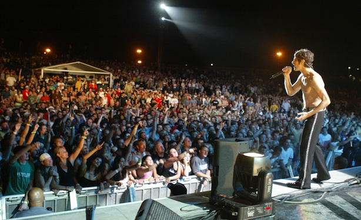
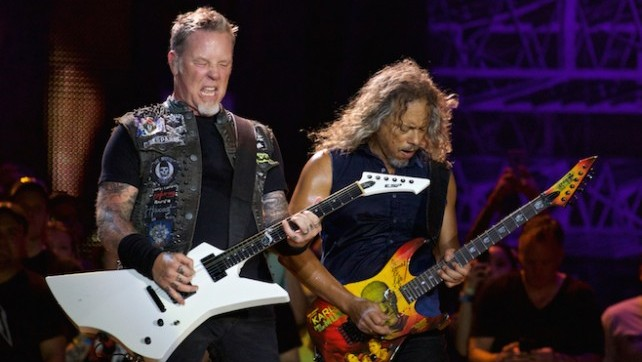
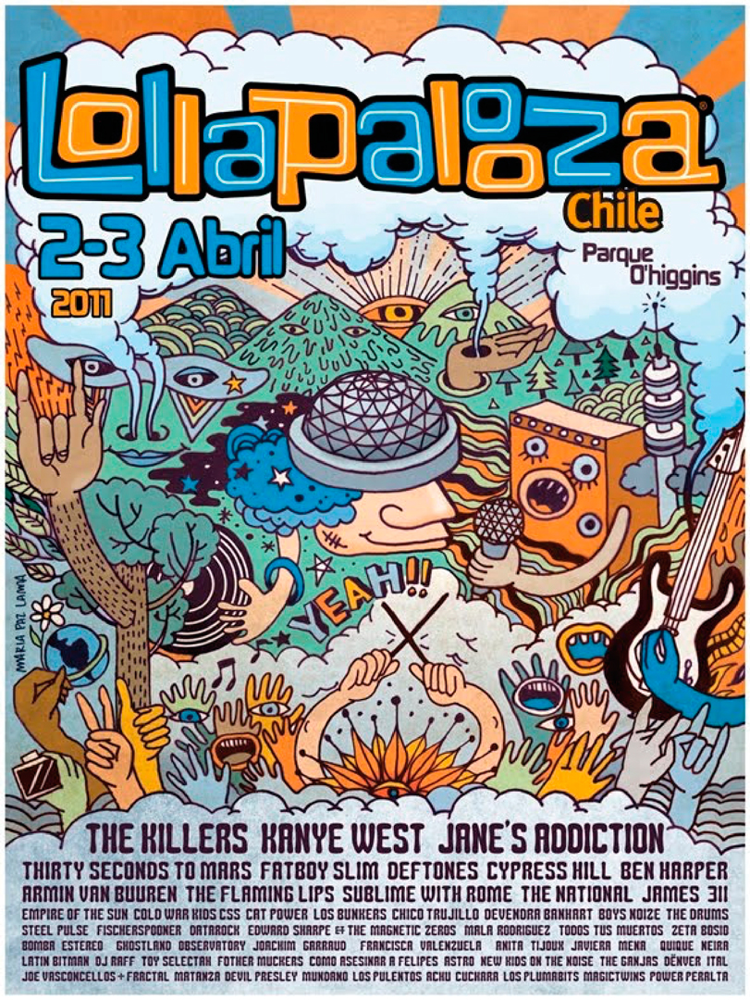
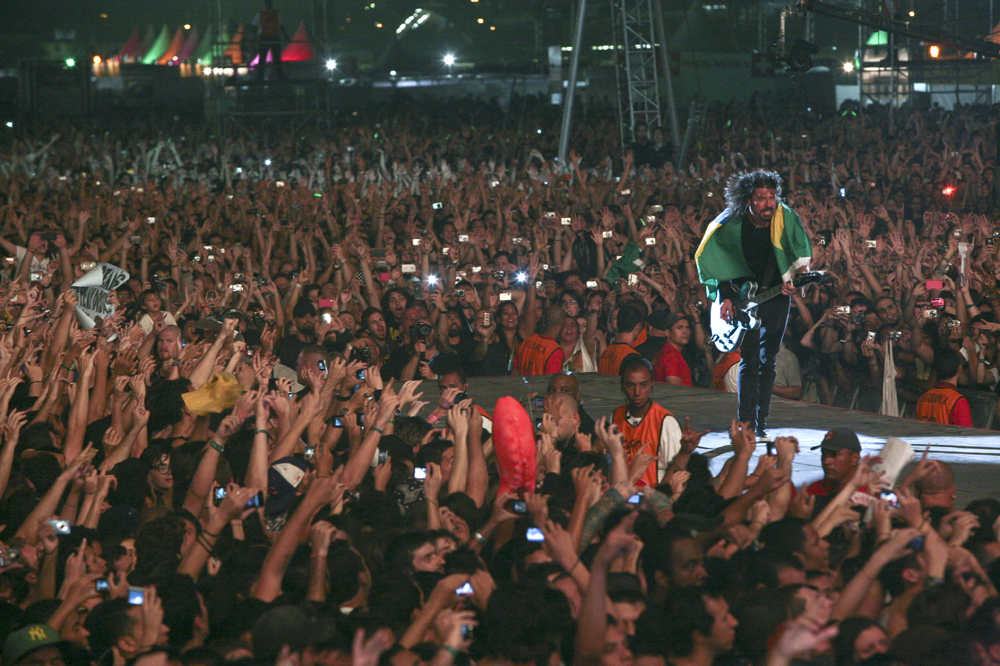
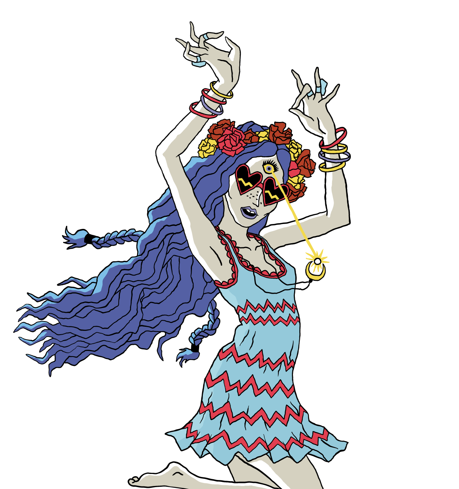

Como começou??
Lollapalooza foi criado em 1991, por Perry Farrell, vocalista de Jane’s Addiction.
 Após sua banda não ser incluída no festival britânico Reading Festival e querendo fazer uma turnê de despedida do grupo, surgiu o festival, inspirado no Gathering Of The Tribes.
Após sua banda não ser incluída no festival britânico Reading Festival e querendo fazer uma turnê de despedida do grupo, surgiu o festival, inspirado no Gathering Of The Tribes.
A primeira turnê, que rodou pela América do Norte, teve a participação de Siouxsie & The Banshees, Nine Inch Nails, Butthole Surfers, Rollins Band e Violent Femmes. Desde a primeira edição o organizador se preocupou em mesclar a música com outras ações, como artistas de circo, ativistas, tatuadores, espaços para leituras etc, o que o diferencia de outros eventos musicais.
Desde 91 nunca mais parou?
Não foi bem assim… De 1998 a 2003 não houve edições do evento. Em 1996, Perry Farrel cortou ligações com o festival por causa da presença do grupo Metallica no line-up. Para seu idealizador, o grupo representava o fim da era “alternativa” do evento, já que era bastante famoso e composto por “cinco caras brancos tocando guitarras”.
Em 2003, Perry convocou sua banda Jane's Addiction para voltarem à ativa e retomarem o festival. Apesar do recomeço, o preço alto dos ingressos fez com que, em 2004, o evento fosse cancelado ainda na metade. Em 2005, Perry fez parceria com uma empresa para ressuscitar o festival, desta vez com outro formato, não mais itinerante, mas apenas em Chicago.
O curioso é que, apesar de ter causado um hiato no evento, o Metallica acabou voltando ao Lollapalooza de 2017, edição que contou com Paul McCartney e Florence and the Machine.
E quando o evento saiu da América do Norte?
Somente em 2011 as fronteiras foram quebradas novamente e o festival aconteceu no Chile, dirigido por Jane’s Addiction, com destaque da participação do rock de The Killers e do hip-hop de Kanye West. Nos anos seguintes, Brasil, Argentina e Alemanha também receberam as suas edições do Lollapalooza. Em 2017, ocorreu a primeira edição em Paris, na França, totalizando 6 países que receberam o festival.
Como foi o começo no Brasil?
A primeira edição brasileira do festival aconteceu em 2012 com dois dias de festival realizados no Jockey Club de São Paulo. Cerca de 135 mil pessoas estiveram no evento, que teve shows de Foo Fighters e Artic Monkeys, em seus dois dias. Desde então, o país recebe uma edição anual do evento de música.
E quanto ao nome??
No inglês, o nome dá a ideia de algo fora do comum. Segundo o idealizador do evento, ele o pegou de um episódio de Os Três Patetas, mas até hoje ninguém conseguiu encontrar um episódio da série em que alguém tenha falado isso… De qualquer modo, de acordo com os dicionários de inglês, a expressão é anterior ao evento. Seja como for, a escolha do termo foi certeira e hoje ele se tornou, praticamente, sinônimo de música alternativa na linguagem mundial.
